|
AmplioWords Help
|
New to AmplioWords?
New to AmplioWords and want to
get an idea of how it works? Read on. Find out how to look
up words in the dictionary and use flashcard quizzes
to improve your vocabulary.
Table of Contents
- Introduction
- Getting Around
- Using the Dictionary
-
- Searching,
Viewing
Definitions, Shortcuts,
Backwards
and Forwards Navigation, Creating
Flashcards
- Flashcard Quizzes
-
- The Review Home Page, Review Exercises, Flashcard Quizzes, Study Statistics
- Other Features
-
- Search History
- Managing your Cards
Introduction top
"A new word is like a fresh
seed sown on the ground of the discussion."
- Wittgenstein (Culture and Value, 1980)
Words are the building blocks
of language, and your vocabulary is an important resource for
communication and self-expression. The program you've downloaded,
called AmplioWords, aims to help you expand your vocabulary easily
and efficiently.
To help you learn new words, AmplioWords includes two components: a dictionary, and
a flashcard quiz system. The
dictionary allows you to look up the definitions
of new words you come across conveniently. The flashcard quizzes give
you an effective way to practice the words you look up.
Studying works
in three steps:
- Look up a word in the
dictionary.
- Browse the dictionary page
and select definitions you would like to remember.
- Do flashcard
quizzes to remember the words you look up.
The rest of this help file explains each of these three steps.
Getting Around top
In AmplioWords, there are four main tabs with which you should become
familiar. A picture of the tabs appears below.
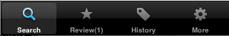
Each tab gives you access to different features:
- The Search Tab: Access
the dictionary to look up words and create flashcards.
- The Review Tab:
Do flashcard quizzes and view statistics on your
flashcard collection and memory skills.
- The History Tab:
Access past dictionary
searches.
- The More Tab:
View this help file, licensing information, and manage your flashcard
collection.
Using the Dictionary top
When AmplioWords finishes loading, it displays the dictionary
search screen.
Searching
top
Searching with the dictionary is simple: touch the
search box and begin typing your word. You can type the whole word, or
type the first few letters and then browse to your word by scrolling
down the list.
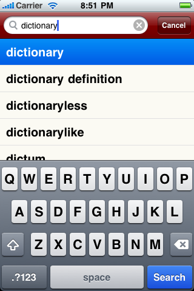
If your word does not appear in the list, that means AmplioWords
doesn't
have a definition for that word. When this happens, let us know,
by emailing us
or visiting our
customer support site, and we'll
try to add it to the next dictionary update.
Viewing
Definitions top
To choose a word, simply touch it, and a
dictionary page will open.
Dictionary pages in AmplioWords are a modified version of
Wiktionary's online web pages and look like the picture below.
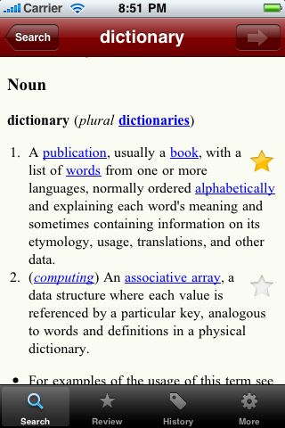
The word you looked up appears in the title; below the title are the
word's etymology and definitions. A separate definition exists for the
noun, verb and other grammatical categories. Synonyms are
often provided. In some cases, examples are provided too.
Shortcuts top
You may have noticed in the picture above that certain words on a
dictionary page appear in blue. Blue words are
a shortcut: simply touch them to look up that word. No
typing required.
Backwards and Forwards
Navigation top
At times, you may want to compare the definitions of two words or
return to a definition you were viewing before using a shortcut. For
your convenience, dictionary pages have
arrows at the top of the screen that you can use just like the buttons
on your web browser.
Star
Buttons top
You've probably already noticed the yellow star buttons
on dictionary
pages. Those star buttons are one of the unique features of
AmplioWords'
dictionary.
When you press a star button, AmplioWords creates a new flashcard for
the word you looked up, using the definition located to the left of the
star, and adds it to your collection.
Next, let's look at how you can study with your flashcard collection.
The Review Tab top
Exercise your vocabulary
skills by doing flashcard quizzes.
The
Review Home Screen top
The Review Home screen is the first screen you see when you
press the review tab.
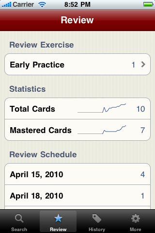
There are three sections: the Review
Exercises section (at the top), and the Study Statistics section (in
the middle) and the Review Schedule(at the bottom).
- Review Exercises: Start
flashcard quizzes from this area. On the left, you will
see a brief description of the quiz. Touch the quiz item to start.
- Study Statistics:
This area gives you information about your flashcard collection, and
tells how well you know the cards in your collection.
- Review Schedule:
A date appears on the left, and the number of cards scheduled for
that date appears on the right.
Let's look at each of these sections in more detail.
Review Exercises top
AmplioWords provides two vocabulary practice exercises:
Scheduled Practice and Early Practice.
Scheduled Practice
As you look up more words, your flashcard collection grows. After some
time, it becomes impractical to study all the cards in your
collection; you only have time to review a limited number of cards each
day. How to choose cards for review?
To solve this problem, AmplioWords automatically chooses cards for you
using a technique called Spaced
Repetition. In spaced
repetition, cards are selected based on how easy it was for you to
remember a given word's definition in the past.
When you create a flashcard, AmplioWords schedules
a practice time for you to view that card. The first practice time is
usually the day after you pressed the star button. Future
practice times depend on how easy or hard it is for you to
recall the definition of the word on the card. Difficult cards are
scheduled for review in the near future; easier cards are scheduled for
review farther in the future. And, as cards become easier, they are
scheduled farther into the future.
Scheduled Practice quizzes are the main way of using AmplioWords and,
when they are available, appear in the Review Exercise area like so:
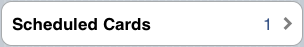
Early Practice
In addition to Scheduled
Practice, there is another review mode called Early Practice. In this
exercise, you practice the cards that you created today. Early practice
quizzes appear like so:
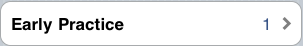
No Available Quizzes
When there are no cards scheduled for today, or if you have not created
any new cards today, then the Review Exercises will
show the following message:
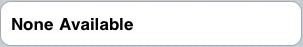
Next, let's look at how a flashcard quiz actually works.
Flashcard
Quizzes top
Flashcard Quizzes in AmplioWords are straightforward. When you start a
quiz, AmplioWords loads a practice set of cards and shows you each
card, one at a time.
First, you'll see the front of the card. The front will have a word on
it, like in the example below.
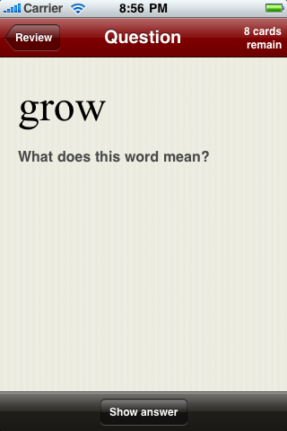
By showing you the front of a card, AmplioWords is challenging you to
remember the definition. Try to remember it. Once you've remembered the
definition (or realized you've forgotten it), press 'Show Answer'. This
will flip the card over to the other side, revealing the definition of
the word (see below).
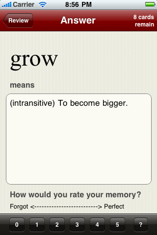
Did you remember the definition correctly? Was it easy? Or did you
forget? AmplioWords wants to know! Tell the system how easy or hard it
was for you to remember the definition by rating the difficulty on a
scale of 0 - 5 using one of the bottom buttons.
After you press one of the buttons, AmplioWords will show you the next
card to review. When you finish the last card, the system will show you
a
debriefing page that summarizes your review session. If some
of the cards you viewed scored lower than 2 or 3, then the system will
recommend that you review those cards one last time (but you can skip
the
extra practice if you want). When you are finished, the
system returns you to the Review Home screen.
Study Statistics top
Sometimes it's nice to see the progress you're making in your studies.
In AmplioWords, we've tried to give you some feedback on your studying
by showing you a couple of simple statistics that we think might be
useful.
The first statistic is about your flashcard collection. On the right,
you can view the total number of cards you have in your collection. A
sparkline graph shows you how the size of your card collection has
changed over the past 30 days.
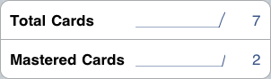
The second statistic is about your overall memory retention.
When a
card has a score above 4 in the two most recent study sessions, that
card is
classified as a mastered card. The sparkline graph shows you
how the
number of mastered cards changes over timeand, on the right, you can
view the current total number of mastered cards.
And that's it for reviewing!
Use AmplioWords once a day and check the Review tab to see if there are
cards scheduled for today. If so, practice the words with a flashcard
quiz. Check the card statistics to watch your progress in learning the
words you look up.
Other Tabs top
The Search and Review tabs are where you'll do most of your work, but
there are others. We've included a Search History tab and a More tab.
The
Search History Tab top
There may be times when you want quick access to words you've looked
up in the past. For
example, you may wish to view the full definition of a word, and not
only the smaller section included on a flashcard.
To make looking up past words
easy, we've included a History tab which gives you easy access to past
searches. Each word you look up is shown
in a list, organized by date. Words looked up on the same day appear in
the order they were looked up. Here's a picture!
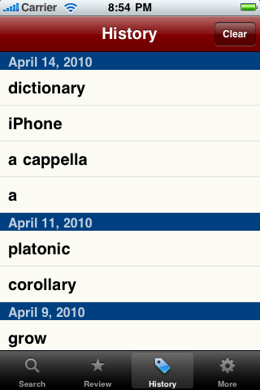
To view the full definition for
a word, scroll through the list until you find the word and then touch
the row. AmplioWords will load the full dictionary page, which is
identical to the page you viewed in the Search tab.
The More Tab top
The More tab is where we've put
features that might come in handy every now and then, but that you
probably won't be using as often as the Search, Review and History
features.
In addition to this help file
you are viewing now, the More tab allows you to manage your card
collection.
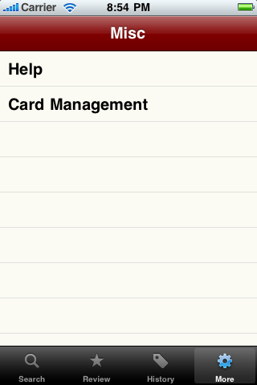
Managing Your Cards top
We've included a Card Management screen to allow you to make changes to
your flashcard collection. From this screen you can edit and delete
cards in your collection. Pressing the Manage button launches the Card
Manager screen, which looks like the following:
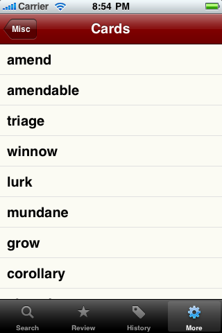
Editing and Deleting cards is accomplished in two steps.
First, br/owse to the card you want to Edit or Delete by scrolling
through the card list until you see the card you're after. If your
collection is very big, or you prefer typing, you can use the text box
at the top to filter the cards in the list. Type the first few letters
of the word to speed up your search, just like in the searching part of
the Search tab.
Stop scrolling when you see the card you want, and press the button to
the right of the card to go to the Edit screen. The Edit Screen should
look something like the screen below.
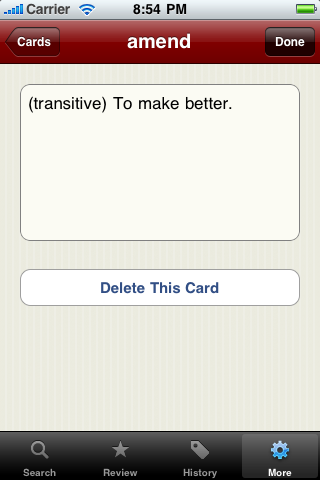
Second, use the edit screen to make your changes:
- Edit the definition and
press 'Done' to save your changes.
- If you want to delete the
card from your collection, use the Delete button.
- Cancel your changes with the
back arrow button (at the top left).
Copyright Notice
The description, pictures and
all other contents of this file are the property of AmplioStudios and
may not be reproduced without permission. Please contact
support@ampliostudios.com if you have any questions.
Copyright AmplioStudios 2009 -
2010. All Rights Reserved.